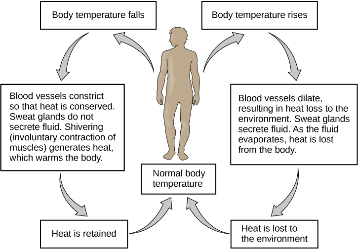
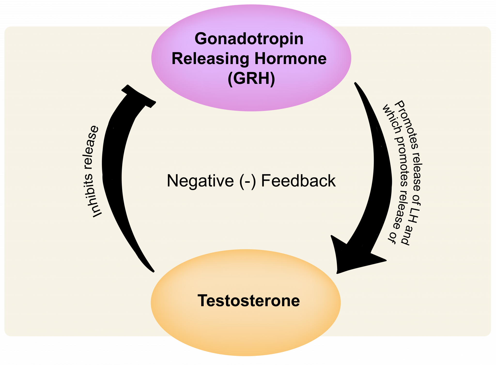

Negative Feedback
As noted previously, negative feedback tends to reduce the future output of a system.
Example One: Home Heating System
When the temperature in a heated room reaches a specific set upper temperature limit, the heating system of that room is switched off. The temperature then begins to fall. When the temperature falls below a specific set lower limit, the heating system is activated. If the upper and lower limits are close in range, a relatively steady room temperature is maintained.
Summary: An increase in temperature results in the heating system shutting off which results in a decrease in temperature.
Example Two: Personal Heating System
Lisa is feeling hot, experiencing a small increase in body temperature. She decides to remove her jacket to decrease her body temperature.
Summary: An increase in body temperature results in removing some clothing thus decreasing body temperature.

Example Three: Human Hormone Systems
Biologically speaking, humans have many negative feedback systems working continually to keep their bodies in homeostasis. Hormones are good examples of such systems. For example, an increase in blood testosterone levels causes the body to decrease the production of testosterone.
Summary: An increase in blood testosterone levels results in the body decreasing the production of testosterone.
